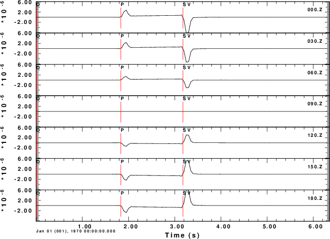
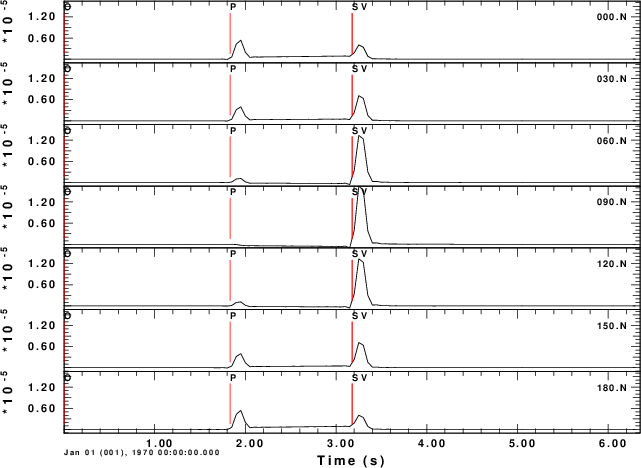
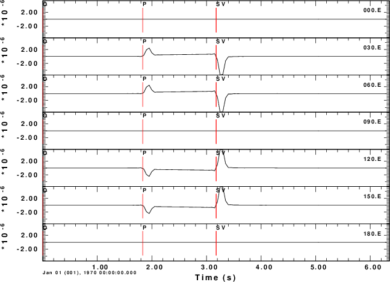
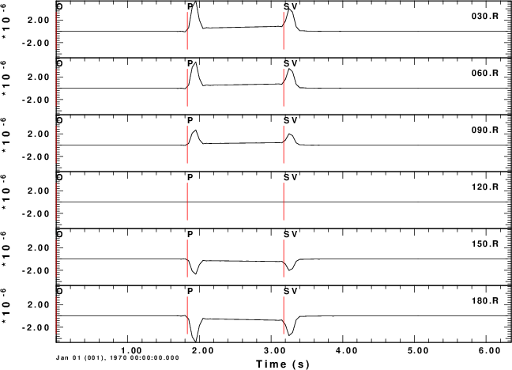
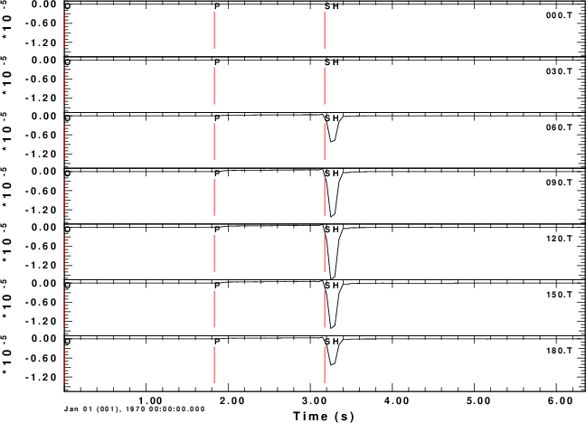

With your kind help, I've succesfully generated Green's functions for single
forces. But I have a problem of combining them to create three component time
histories now.
Assumed that φ is the source to station azimuth measured clockwise from
north, ur is the radial component of the ground velocity seismograms which
is positive in the direction away from the source, and ut is the tangential
component of the ground velocity seismograms, according to the equations for
point force at page 172 of document cps330o.pdf, I have
uz = ( f1 cosφ + f2 sinφ )ZHF + f3 ZVF
ur = ( f1 cosφ + f2 sinφ )RHF + f3 RVF
ut = ( f1 sinφ - f2 cosφ )THF
However, I think ut should be calculated like below if it is positive at a
right angle clockwise from ur.
ut = ( - f1 sinφ + f2 cosφ )THF
Is there any mistake I've made in my assumption? Or is there anything wrong
in the attached figure? Could you please help me again to solve the problem?
I agree that the relation for ut looks strange. However, remember that the THF is defined deep in the code and that the above transformation ensures that the results are correct.
To test the code, consider a horizontal force point north that is at a depth of 5 km. We will compute the ground velocities at an epicentral distance of 10 km at azimuths of 0 to 180 degrees in increments of 30 degrees.
For this source, we expect the P-wave to be up (Z positive) and away (R positive) from the source at a rec3iver azimuth of 0 degrees. We also expect the transverse S-motion motion at an azimith of 90 degreen to be in a north direction, or negative transverse direction. The positive transverse direction is that of increasing azimuth.
The shell script below shows the computations for a halfspace. The synthetics are for the Z, N, E, R and T components of motion. Even though these are for ground velocity (m/s), the near-field terms are obvious on the transverse component. The figures also illustrate the radiation pattern.
|  Z-component |
 N-component |
 E-component |
 R-component |
 T-component |
#!/bin/sh
#####
# create a velocity model
#####
cat > whole.mod << EOF
MODEL.01
simple wholespace model
ISOTROPIC
KGS
FLAT EARTH
1-D
CONSTANT VELOCITY
LINE08
LINE09
LINE10
LINE11
H(KM) VP(KM/S) VS(KM/S) RHO(GM/CC) QP QS ETAP ETAS FREFP FREFS
9.0000 6.1000 3.5200 2.7300 0.160E-02 0.363E-02 0.00 0.00 1.00 1.00
EOF
#####
# create the distance file (hprep96 -h)
# DIST DT NPTS T0 VRED
#####
cat > dfile << EOF
10.0 0.05 128 0.0 0.0
EOF
#####
# define the source and receiver depths
#####
HS=5
HR=0
hprep96 -M whole.mod -HS $HS -HR $HR -d dfile -EXF
hwhole96
hpulse96 -p -V -p 1 | f96tosac -G
#####
# for this combination of distance and source depth, the Green s functions
# have the name 001000050
# Use the gsac MT command to make synthetics at difference aximuths
#####
for AZ in 000 030 060 090 120 150 180
do
gsac << EOF
mt to ZNE AZ ${AZ} FN 1.0 FILE 001000050
w
#####
# rename the output
#####
mv T.N ${AZ}.N
mv T.E ${AZ}.E
mv T.Z ${AZ}.Z
#####
# run again to get ZRT
#####
mt to ZRT AZ ${AZ} FN 1.0 FILE 001000050
mv T.R ${AZ}.R
mv T.T ${AZ}.T
w
q
EOF
done
#####
# now plot the traces in true ampliude
# az a function of azimuth
#####
gsac << EOF
r ???.Z
bg plt
ylim all
fileid name
p
r ???.N
p
r ???.E
p
r ???.R
p
r ???.T
p
q
EOF
#####
# convert to a PNG
#####
for J in 001 002 003 004 005
do
plotnps -F7 -W10 -EPS -K < P$J.PLT > t.eps
convert -trim t.eps $J.png
done
#####
# clean up
#####
rm hspec96.??? whole.mod dfile T.? t.eps